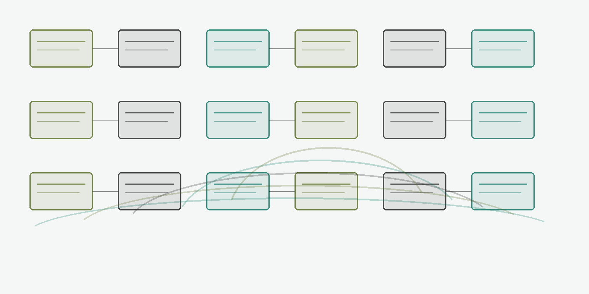
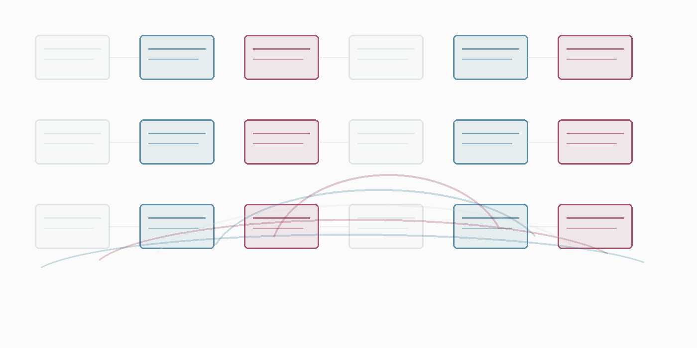

Selected work
Flagship projects
Each page states what the project is, how it works, what has been built or organized, what sources support the presentation, and what is still needed.
AI, Retrieval, and Cognitive Security
Algorithmic Active Measures - data poisoning as counterintelligence tradecraft in AI-mediated intelligence analysis
A published-work surface on data poisoning as counterintelligence tradecraft in AI-mediated intelligence analysis.
It frames poisoned data as an operation against the foundations of analytic judgment, then uses a structured simulation to examine how coherent fabrications can deform AI-supported assessments.
Read the project pageAI, Retrieval, and Cognitive Security
Applied History - lab for using historical case study to inform contemporary policy
An applied-history lab for using historical cases as disciplined analytic instruments.
It connects portfolio-native case selection, Belfer-style applied-history logic, Hoover-style historical working-group discipline, analogy limits, institutional context, decision points, and present-use constraints so historical comparison can become a bounded case-study memo rather than loose.
Read the project pageAI, Retrieval, and Cognitive Security
Qualitative Capstone - qualitative analysis of analyst response to AI-introduced corruption
The submitted qualitative capstone on whether structured analyst review can catch AI-introduced evidentiary corruption.
It uses fifty matched-pair scenarios, deliberately corrupted evidence packets, Structured Analytic Technique execution, sealed coding lanes, human decision review, triad reconciliation, APEX review rounds, severity-tier review, method standards, per-scenario re-coding notes, and all-fifty.
Read the project pageAI, Retrieval, and Cognitive Security
Critical Functions Observatory - defensive UAS / critical-infrastructure research lab
A defensive UAS and critical-infrastructure research observatory built around national critical functions rather than generic drone security.
It routes malicious-UAS and infrastructure risk through a function-first defensive-research model: CISA National Critical Functions, FAA Remote ID, White House guidance, DOJ/DHS/FAA/FCC legal-advisory constraints, OT asset inventory, DOE/EPA-relevant function dependencies, semantic graphs.
Read the project pageAI, Retrieval, and Cognitive Security
Magnum Opus
A local scholarly retrieval and citation-method discipline system for research corpora.
It ingests a corpus, builds sparse and semantic indexes, exposes a query service, retrieves evidence, scores support, validates citations, runs critique or red-team checks, abstains when support is inadequate, and preserves source influence.
Read the project pageAI, Retrieval, and Cognitive Security
Adversarial Evidence Corruption and Poison-RAG Defense - advisor technical annex for LLM-supported analytic judgment
A technical research annex for adversarial evidence corruption and Poison-RAG defense.
It models retrieval poisoning as a causal chain across actor motive, target judgment, attack surface, vector, carrier, timing, RAG layer, analytic deformation, detection trace, countermeasure, replay, and method discipline. Its distinctive timing layer distinguishes slow poisoning, fast injection.
Read the project pageAI, Retrieval, and Cognitive Security
Quantitative Capstone - quantitative arm of the AI-corruption capstone study
A quantitative future-work branch of the submitted qualitative capstone, not the submitted capstone itself.
It turns the Cognitive Firewalls question into controlled condition logic: a fifty-scenario, two-dose, three-protocol matrix with clean versus contaminated evidence, D0/D1 document pairs, DP1/DP2 packets, Scenario Factory materials, Blue/Red role architecture, DV-B contamination-handling logic.
Read the project pageAI, Retrieval, and Cognitive Security
Analyst Workstation - eight-page interactive AI-augmented intelligence-analysis handbook
An analyst workstation for AI-augmented intelligence analysis.
It converts AI support into inspection surfaces: knowledge production, prompt engineering discipline, cognitive-bias safeguards, Key Assumptions Check, live SAT visualization instruments, source review, ICD/NIST-bound assurance language, analyst-model disagreement, and human acceptance or.
Read the project pageHow to read it
How to read it
The project pages are drawn from maintained project records. Each displayed project statement names the kind of record note supporting it.



What this does and does not show
This website shows project purpose, mechanism, sources used, current state, and what is still needed. It does not show private working files on the public homepage.
Full catalogue
Project Families
The catalogue gives a direct route into every public project page without requiring a file-level appendix.
AI, Retrieval, and Cognitive Security127 projects
Intelligence Methods and Decision Systems78 projects
Portfolio Systems and Projects13 projects
Research, Manuscripts, and Capstones1 projects
Security, History, and Regional Analysis13 projects
Source Systems and Research Infrastructure11 projects
What this does and does not show
What this does and does not show
This is the public professional website, not a file archive. A separate support archive can be provided to a reviewer who needs complete working materials.
How to read it
Read this site as a portfolio: it gives the project logic, visible status, and sources used without exposing private working materials on the public homepage.